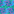
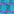
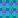

Polyominoes, one-sided: isohedral number 4
3 shapes · each shown with one of its simplest grid-aligned tilings, coloured by orbit · all galleries · family table


9-omino (one-sided) · k = 4


9-omino (one-sided) · k = 4


14-omino (one-sided) · k = 4